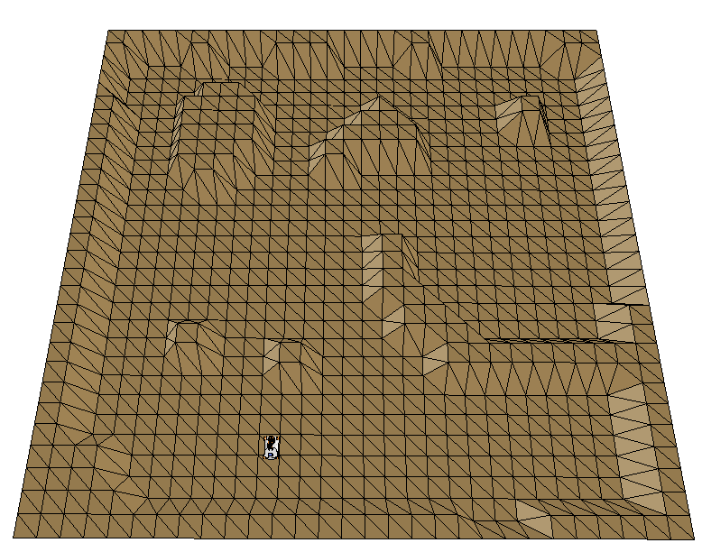
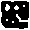

Description
The goal of the third EMOR tutorial is to write a program enabling youBot to navigate. This task is broken into three subtasks:
- generation of random, yet collision-less trajectory (without any destination)
- navigation to the destination without the use of map
- using map for planning of a colision-less trajectory to the destination
Similarly to the previous tutorial, you should write your program on the basis of exercise03.m script, by modifying the section between the
% EMOR exercise begin and % EMOR exercise end comments.
And analogically, we also prepared a simulation environment in V-REP stored in file exercise03.ttt.
You must run it before running your matlab script.
The environment used for this task (presented on the left side) was generated from the binary image, with white pixels representing obstacles (presented on the right). The image is of size 30px x 30px, whereas the map is of size 15m x 15m.
 
Task requirements - generation of random trajectory
You should write a program that:- Moves the robot ahead (i.e. along the same orientation) until some of obstacles are near (e.g. in a distance smaller than 0.5m)
- Randomly selects new the orientation (e.g. from (30, 330) degrees)
- Rotates the robot so his orientation is the same as the randomly chosen one and starts to move ahead (enters the state from the first point)
Task requirements - navigation to the place of destination with Bug2
Write a program implementing the Bug2 algorithm. The basic idea is to move along the line connecting the target and initial point and in the case of being near to the obstacle follow its contour and thus circumnavigate it. The program should work as follows:- Find the line connecting initial and target position
- Rotate towards the goal
- Move towards the goal until reaching an obstacle
- Use "following the wall" algorith to avoid the obstacje and depart immediately when it is able to move directly toward the goal (when crosses the "original" line once again).
Task requirements - planning with Global dynamic window
This algorithm is responsible for finding the optimal route to the goal in the planning phase, i.e. before leaving the initial pose. For this purpose it analyses the map generates the path and in an off-line manner. When finished, the robot simply follows the generated path. The generation of the path works as follows:- Set the cost of target position (cell) to 0
- For a given neighbouring cell find the cell with lowest cost lc, set cost of the currently analysed cell to lc+1
- Repeat step 2 for each cell until all cells (including the initial one) have assigned costs
- Find the path starting from the initial cell to the destination, by selecting the neighbouring cell with smallest cost
Grading
- Generation of a random trajectory (2p), including:
- Moving the robot ahead until an obstacle enters the "dangerous zone" (1p)
- Random selection of new orientation and rotating the robot (1p)
- Navigation to the place of destination with Bug2 (5p)
- User input of the goal position (x,y) (1p)
- Implementation of the Bug2 algorithm (3p)
- Dynamic visualization of the realized path point by point (1p)
- Planning with Global dynamic window (6p)
- Loading and proper "rescaling" the map from map.png file (1p)
- User input of the goal position (x,y), with validation whether it is accessible (1p)
- Implementation of the "Global dynamic window"-based generation of trajectory (2p)
- Drawing the generated trajectory in the (1p)
- Realization of the trajectory (1p)
Important: You must modify only the indicated section of the exercise03.m script. Modification of other parts of the code are forbidden and will result in zero points from the project.
Programming hints
The motion of the robot should be controlled by variables representing the relative velocities:forwBackVel- linear velocity along the x axis of the robot [m/s]leftRightVel- linear velocity along the y axis of the robot [m/s]rotVel- angular velocity around the z axis of the robot [rad/s]
pts- a table containing readings i.e. contact points, in sensor's coordinates, each expressed as [x;y;z]contacts- a table of values <0/1> determining whether an obstactle was detected or the reading corresponds to the maximal sensor range (in this case it is set to 5m)